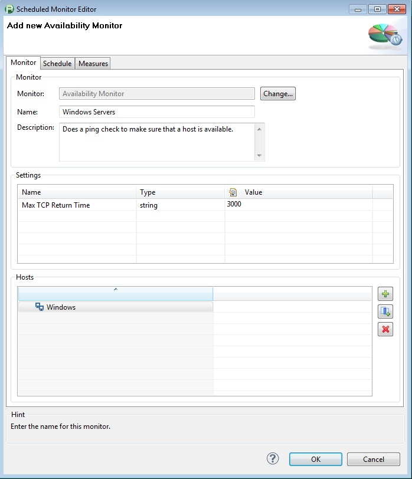
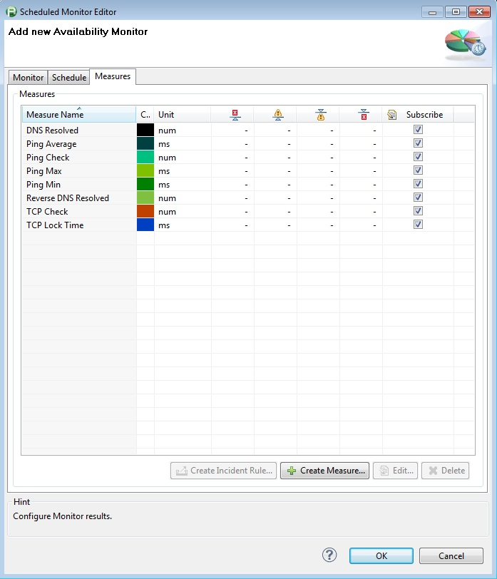
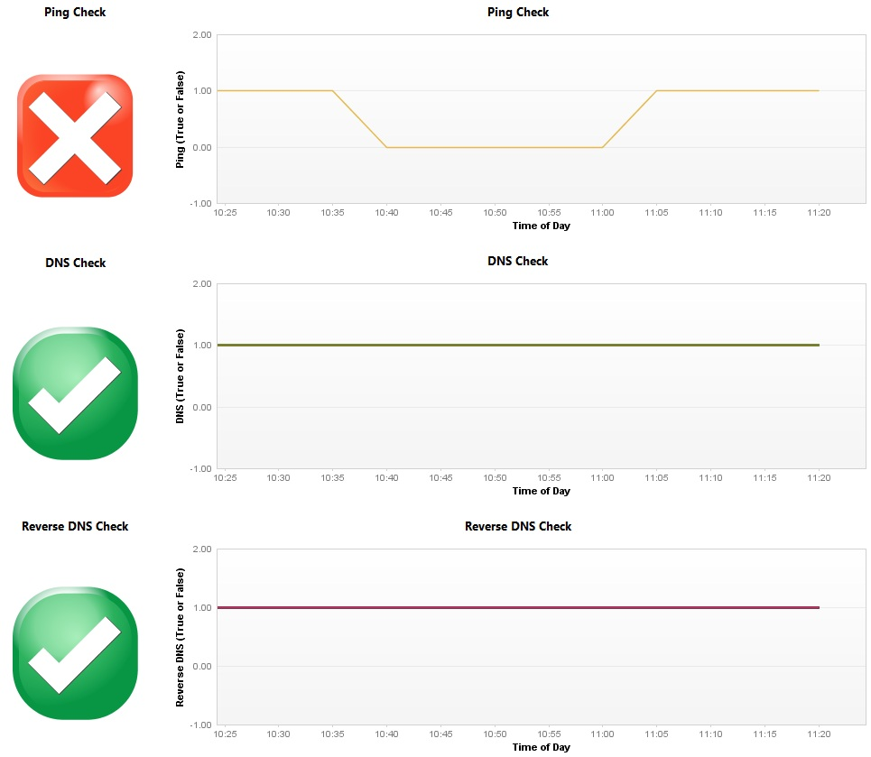

The availability monitor can be used to test if a server can be pinged, and will also check to ensure that DNS and reverseDNS capabilities are functioning.
|
 |
 |
 |
|
Plug-In Versions |
Availablity Monitor Plugin 1.0.0 (compatible with dynaTrace 4.2+) |
|
Author |
Derek Abing |
|
License |
|
|
Support |
Not Supported |
|
Known Problems |
|
|
Release History |
2013-03-12 Initial Release |
DNS Resolved: Returns a 1 if the server DNS name is resolvable and a 0 if the server is not resolvable
Ping Check: Returns a 1 if the server is pingable and a 0 if the server is not pingable
Reverse DNS Resolved: Returns a 1 if the server DNS name is resolvable and a 0 if the server is not resolvable
TCP Check: Returns a 1 if the server is reachable on TCP port 7 and a 0 if the server is not reachable
TCP Lock Time: Returns the time taken to secure a Socket Lock on TCP Port 7
|
Name |
Value |
|
Max TCP Return Time |
The max allowed time for the response to the ping in ms |
Import the Plugin into the dynaTrace Server. For details how to do this please refer to the dynaTrace documentation.